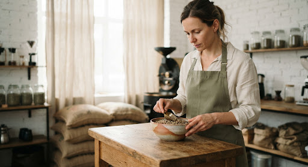
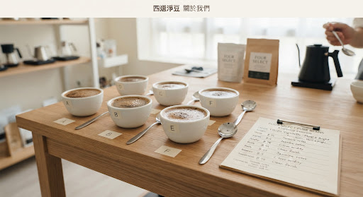
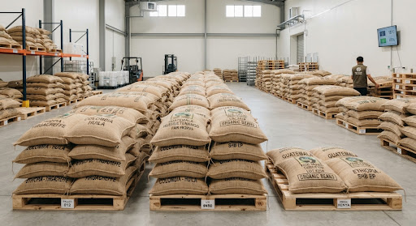
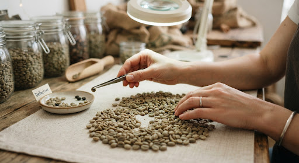
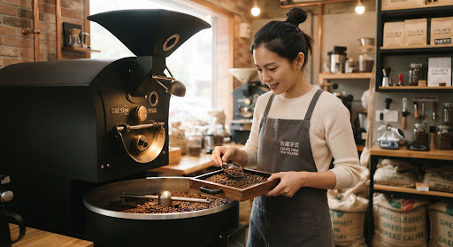
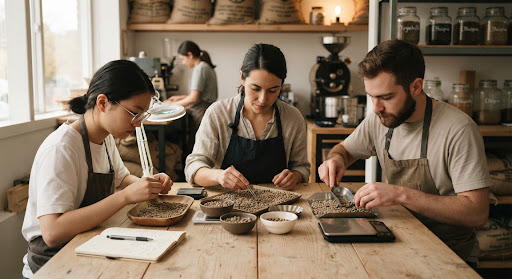
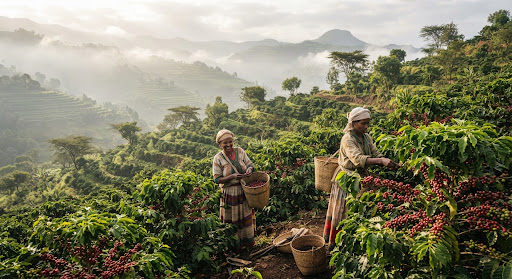
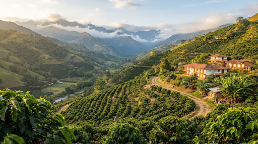
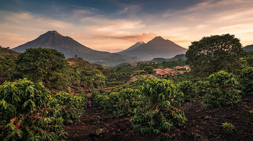

我們相信，好咖啡應該乾淨、簡單、讓人安心
從高海拔小農莊園到每日早晨的溫潤手沖，我們歷經繁複的四次挑豆工序，只為了將最純粹純淨的咖啡豆風味，原原本本送到你的杯中。沒有浮誇的包裝，只有對純淨品質的無比挑剔。

何謂「淨豆」？
淨，是純粹，更是克制。不以濃重深焙掩蓋雜味，唯有在烘焙前徹底剃除酸敗豆、黑豆、蠹蟲豆與碎豆，才能在淺中焙的澄澈杯測中，體會如清晨露水般的花香與溫潤甘甜。
堅持無農殘、無赭麴毒素
每一批生豆抵台皆送檢第三方 SGS 與溫控倉儲，為注重生活品味與身體感受的你把關。
4 道
嚴選挑豆工序
剔除微瑕，極致純淨
100%
精品莊園生豆
SCA 杯測 85 分以上
0 殘留
瑕疵與農殘承諾
SGS 檢驗合格安心保證
7 日
每週新鮮小批烘焙
下單現焙，黃金熟成期直送
品牌四大核心價值
在講求快速產出的時代，我們甘願將時間花在微小細節。遵循嚴謹食品規範，不宣稱誇大功效，回歸大地最誠懇的風味饋贈。
01. 健康來源・生生不息
嚴選海拔 1,800 公尺以上、具備友善耕作與有機認證的小農莊園。高海拔的低溫與雲霧讓咖啡果實慢速熟成，累積充沛糖分與細緻芳香物質。零使用違規化學農藥，尊重土壤與生態循環，讓每一杯入口的芬芳都源自純淨大地。
02. 四次挑豆・剔除微瑕
「挑豆」是乾淨風味最關鍵的心臟。我們落實四道防線：產地端嚴格初選、抵台高精度光學色選、烘焙前職人肉眼細緻複選手挑，以及烘焙熟成後的杯測終選。堅持將每一粒發育不全或變質的生豆移除，只保留百分之百的純淨風味基質。
03. 新鮮烘焙・微批直達
反對大量堆積倉儲與陳年老豆。台北工坊每週採限量微批次（Micro-lot）排單烘焙，運用數位烘焙曲線即時監控溫升率（RoR），並精準留存豆體細緻的茉莉花香、莓果酸甜與焦糖尾韻。以單向透氣閥鋁箔包裝，確保開袋即享黃金醒豆期。
04. 生活品味・寧靜日常
咖啡不僅是提神飲品，更是凝神靜心的日常微儀式。我們倡導化繁為簡的日式「間」（Ma）與北歐生活美學，無論是濾杯滴落的水流聲，或是滿室幽微的堅果香氣，都能讓你在匆忙的工作與生活中，覓得十幾分鐘專屬於自己的呼吸與寧靜。
精準與溫度的對話：
青田街烘豆工坊
走進四選淨豆的台北工坊，空氣中沒有刺鼻焦味，只有清爽的麥芽糖與烘烤麵包香氣。我們設有獨立生豆恆溫恆濕室（嚴格維持攝氏 18-20 度、濕度 55% 穩定環境），防止生豆水分揮發或陳化。
選用德國客製半熱風鑄鐵烘豆機，搭配精密差壓感應器與四點探針，確保每批豆子在脫水、梅納反應與一爆發展期皆能遵循理想的熱傳導平衡。
「每一鍋豆子的溫度與氣流，都是與莊園風土的深層對話。」




專注純淨的職人團隊
凝聚對咖啡純粹的熱愛，每一位夥伴都是純淨風味的守護者
林書宇 Ray Lin
Q-Grader創辦人 / 首席尋豆師
國際精品咖啡品質學會（CQI）認證 Q-Grader。連續八年親赴衣索比亞、哥倫比亞與瓜地馬拉等高海拔微型莊園，直接與農民對話並確立友善契作關係，堅持從源頭挑選具備清爽純淨潛力的頂級生豆。

許芳綺 Chloe Hsu
Roastmaster首席烘豆師
擁有超過十年精品咖啡烘焙履歷，曾獲台灣烘豆大賽前段席次。擅長掌握淺焙至中焙階段的花香層次與明亮果酸，堅持以精密數位曲線烘焙，確保每一鍋豆子均勻受熱、絕不殘留夾生青草味。

淨豆品管小組
QC Team手工挑豆職人隊伍
由四位具備深厚感官經驗的手挑職人組成。小組累計經歷超過五千小時的人工肉眼複選手選作業。即便光學設備已排除 98% 異色豆，她們仍堅持逐盤翻檢，耐心淘汰形狀畸變、微蟲蛀或發育不全之瑕疵生豆。
全球合作小農產區地圖與履歷
我們實行直接貿易（Direct Trade），越過層層中間商，將利潤回饋給悉心照顧樹叢的小農。以下為四選淨豆常年合作的三大核心經典微產區：

耶加雪菲 水洗原生種 G1
原生種高海拔緩慢熟成，手工精摘熟成度達 95% 以上全紅櫻桃。經長達 48 小時非洲床架通風日曬，展現驚人的野薑花、白桃與佛手柑澄澈茶感。

粉紅波旁 雙重厭氧發酵
罕見粉紅波旁品種，於密封不銹鋼桶進行低溫 72 小時厭氧發酵。賦予杯中乾淨明亮的草莓軟糖、熱帶百香果與甜橙花蜜風味，餘韻綿密甘醇。

波旁 / 卡杜拉 水洗慢乾
富含礦物質的火山灰黑土與巨大日夜溫差，凝練出極為平衡飽滿的黑巧克力、烤杏仁與紅蘋果甘酸，口感如絲絨般圓潤平順，極受晨間手沖喜愛。
所有批次均附有產地出口植物檢疫證明與莊園直購單據，落實 100% 透明溯源。
第三方嚴格檢驗與安心承諾
純淨不只是哲學，更是客觀可驗證的科學標準。我們定期將每季進口生豆送檢衛福部認證實驗室，建立嚴密的安全防線。
SGS 380+ 農藥零檢出
依據衛福部標準，通過多重農藥殘留分析測試，結果皆為 ND（未檢出）。
赭麴毒素 A 檢驗合格
嚴格防堵黴菌毒素滋生，通過微量 Ochratoxin A 檢測，品質安心。
100% 莊園產地證明
拒絕來路不明的商業混合混豆，每包豆皆可追溯至微產區、海拔及處理廠。
雙恆溫濕倉儲管理
自抵港至烘焙前全時段恆溫防潮保存，杜絕台灣高溫潮濕氣候造成的豆體劣化。
常見問題與咖啡解答
了解更多我們在工序、風味、保存與門市體驗上的堅持
走進青田街門市工坊
隱身於老樹林立的青田街日式街區，我們在此進行烘豆、杯測與每日生豆檢驗。竭誠歡迎喜愛純淨咖啡的你前來，品味一杯現沖澄澈單品。
手沖品飲座席採預約優先制，每日限量 12 席，以維持靜謐深度的品杯品質。
聯絡與合作諮詢
若有企業咖啡豆合作、批發採購、手沖體驗預約或一般問題，請填寫下方表單，我們將於 24 小時內專人回覆。